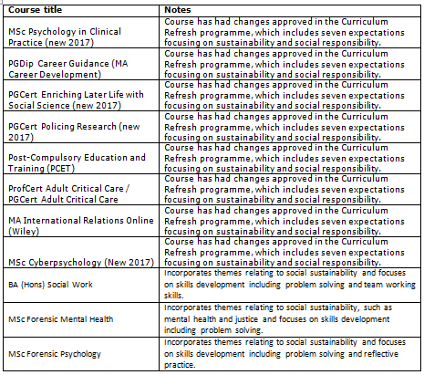
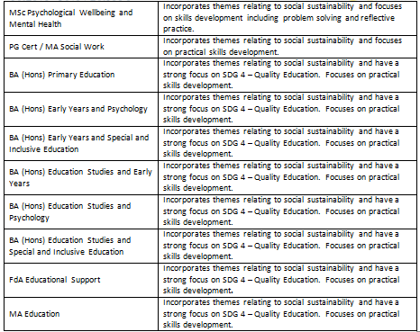
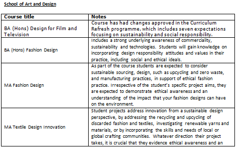
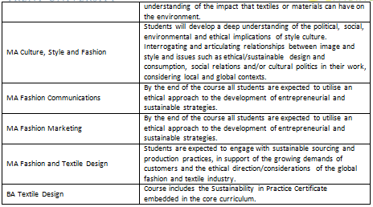

| Example of Courses/Subjects Related to Sustainability (Nottingham Trent University, UK) | |
|---|---|
|
 Example of Courses/Subjects Related to Sustainability (Nottingham Trent University, UK) - Catalog Page 1
|
 Example of Courses/Subjects Related to Sustainability (Nottingham Trent University, UK) - Catalog Page 2
|
|
 Example of Courses/Subjects Related to Sustainability (Nottingham Trent University, UK) - Catalog Page 3
|
 Example of Courses/Subjects Related to Sustainability (Nottingham Trent University, UK) - Catalog Page 4
|
Urdaneta City University integrates sustainability principles across its academic offerings as part of its commitment to producing socially responsible, environmentally conscious, and globally competitive graduates. Sustainability concepts are embedded in various disciplines through course learning outcomes, instructional content, applied projects, and community-based learning activities.
Courses are identified as sustainability-related when environmental, social, cultural, and/or economic sustainability is a significant component of the course objectives and learning outcomes, and not merely a brief reference within the syllabus. These courses support the university’s efforts to align its academic programs with the principles of sustainable development and responsive higher education.
Based on curriculum review and program offerings across all colleges, Urdaneta City University offers a total of 50 sustainability-related courses/subjects during the current academic year. These courses are distributed across various disciplines and reflect the university’s interdisciplinary approach to sustainability education.
Examples of sustainability-related courses offered by Urdaneta City University include Community Health Nursing, Sustainable Tourism, Corporate Social Responsibility, Science, Technology, and Society, Contemporary World, and Community Development. These courses equip students with the knowledge, values, and skills needed to promote sustainable development and address local and global challenges.
These sustainability-related courses include subjects that focus on environmental protection and management, disaster risk reduction, public health, community development, sustainable tourism and hospitality practices, responsible business and governance, green technologies, and education for sustainable development.
Overall, this integration of sustainability-related courses demonstrates Urdaneta City University’s commitment to embedding sustainability within its teaching and learning processes, ensuring that students are equipped with the knowledge, values, and skills necessary to address complex global and local challenges.